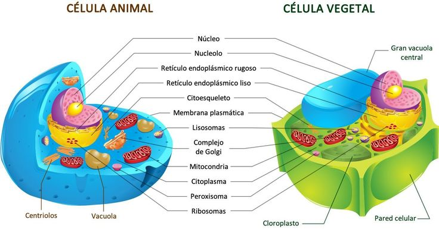
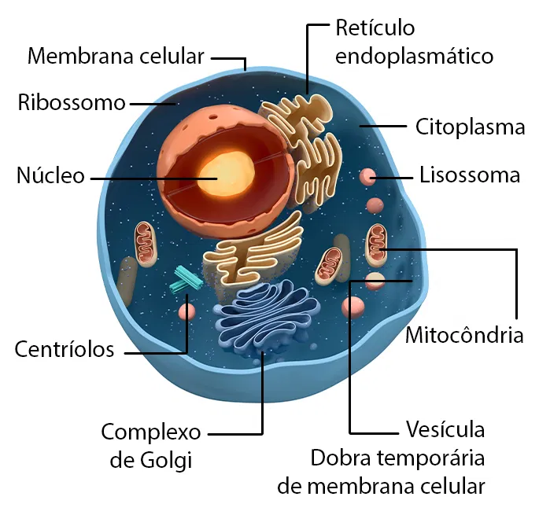
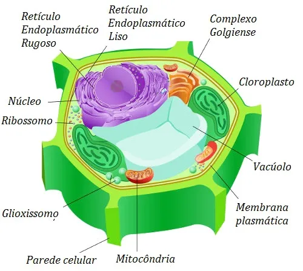

O que são as células?
As células são as menores unidades estruturais e funcionais dos seres vivos. Elas podem ser classificadas como procarióticas ou eucarióticas. As células procarióticas são mais simples, sem núcleo definido nem organelas membranosas, enquanto as células eucarióticas são mais complexas, com um núcleo verdadeiro que abriga o DNA e diversas organelas membranosas (como mitocôndrias e cloroplastos). Exemplos de organismos procarióticos incluem bactérias e cianobactérias, e de eucarióticos incluem animais, plantas, fungos e protozoários. As células animal e vegetal compartilham estruturas-base como membrana plasmática, citoplasma, núcleo, mitocôndrias, ribossomos,retículo endoplasmático, complexo de Golgi e peroxissomos.
Tipos de Células
Célula Procariótica
Uma célula procarionte é uma célula primitiva que não possui um núcleo definido e nem organelas membranosas. Seu material genético (DNA) fica disperso no citoplasma, em uma região chamada nucleoide. Organismos procariontes são unicelulares e incluem bactérias e cianobactérias. Essas células possuem ribossomos (que fazem proteínas), possuem membrana plasmática, parede celular e podem ter flagelos para locomoção. Elas são menores e mais simples que as células eucariontes, mas conseguem realizar todas as funções necessárias para a vida, como reprodução, respiração e nutrição. Por serem muito simples e se reproduzirem de forma rápida, elas se adaptam facilmente ao ambiente e podem ser encontradas em praticamente todos os lugares do planeta.
Célula Eucariótica
Uma célula eucarionte é um tipo de célula que possui um núcleo bem definido, onde o material genético (DNA) fica guardado e protegido por uma membrana. Esse tipo de célula apresenta várias organelas internas (como mitocôndrias, retículo endoplasmático, complexo de Golgi, lisossomos, entre outras), que são como “pequenas estruturas” responsáveis por funções específicas dentro da célula, o que ajuda a manter tudo organizado e funcionando corretamente. Os seres vivos que possuem células eucariontes são: animais, plantas, fungos e protistas. Dentro das células eucariontes nós temos dois tipos principais: a célula animal e a célula vegetal. As duas são eucariontes (ou seja, pertencem à mesma categoria de tipo de célula), porém cada uma tem suas características próprias. Por exemplo: células vegetais possuem parede celular e cloroplastos (estrutura responsável pela fotossíntese), enquanto células animais não têm essas estruturas. Mesmo assim, ambas continuam sendo células com núcleo, organelas e com funcionamento mais “complexo” do que as células procariontes.
Célula Animal
A célula animal possui núcleo, membrana plasmática, citoplasma e diversas organelas internas que realizam funções específicas. Ela não possui parede celular e apresenta lisossomos, mitocôndrias, complexo de Golgi, retículo endoplasmático e centríolos, que ajudam na organização durante a divisão celular. Esse tipo de célula obtém energia a partir da respiração celular, usando nutrientes que vêm da alimentação dos animais.
Célula Vegetal
A célula vegetal possui núcleo, membrana plasmática e organelas, e apresenta estruturas exclusivas como a parede celular (que oferece sustentação) e o grande vacúolo central. Ela possui cloroplastos, onde ocorre a fotossíntese, processo em que a planta produz seu próprio alimento a partir da luz do sol. Essas células são essenciais para o crescimento e desenvolvimento das plantas, mantendo os processos energéticos necessários para sua sobrevivência.
Processos de Nutrição Celular
As células utilizam processos de nutrição para obter energia e continuar funcionando. Nas células vegetais, ocorre a fotossíntese dentro dos cloroplastos, onde a planta usa luz do sol, água e dióxido de carbono para produzir glicose e liberar oxigênio. Já nas células animais, a energia vem da respiração celular, onde os nutrientes obtidos pela alimentação são quebrados e transformados em energia dentro das mitocôndrias. Esses processos garantem que a célula tenha energia para crescer, se dividir e manter todas as suas atividades vitais.
fotossíntese, enquanto as células animais obtêm nutrientes por meio da alimentação e da respiração celular.